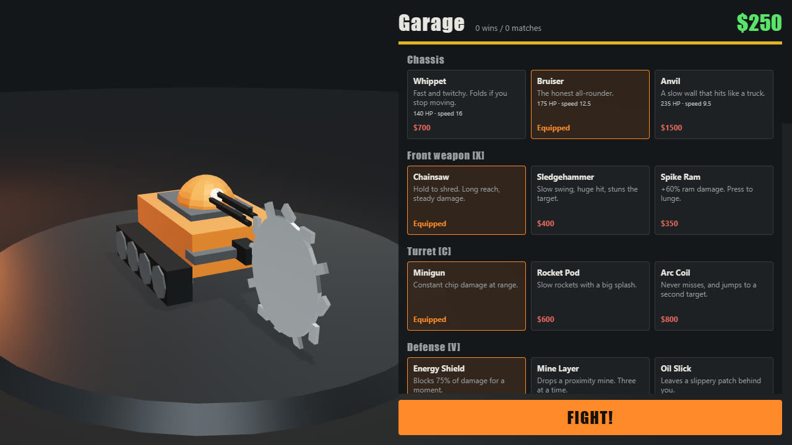

Scrap Riot
A 3D robot duelling game that runs in the browser. Build a robot in the workshop, meet another pilot on a skyscraper roof, and wreck them or knock them over the edge.
- 37 weapons
- 7 maps
- 4 modes
- Online duels
Needs a keyboard and WebGL. A fan-made homage to Robot Rage, not affiliated with or endorsed by Miniclip.